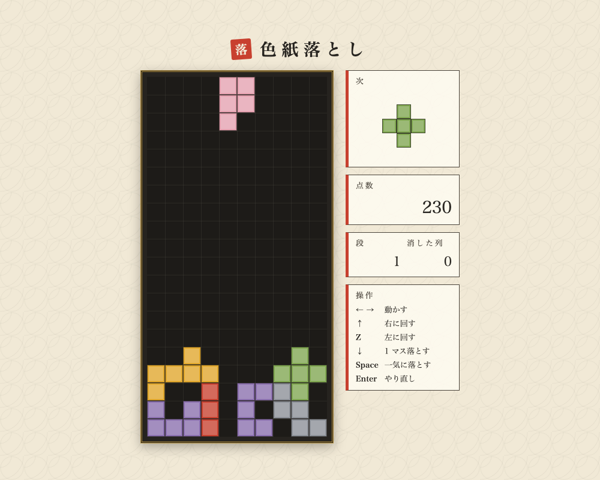

AI 駆動開発のイメージ共有
AI が書いて、AI がレビューして、AI がマージする。
落ちものパズルを1本作って、その全部を記録しました。
※ AI に任せる範囲を、できるだけ広げた演出の流れです。ふだんの開発で、ここまで任せるべきという主張ではありません。
1聞いて、答えをコピーして、人が貼る。手を動かすのは人。
AI がファイルを直す。人が1手ずつ見て「はい」を押す。
人はループの外にいる。決まりと止めどころを決め、結果を見て舵を切る。
今日見せるのは ③ です。
in the loop・on the loop の分け方は、この資料での使い方です。決まった定義があるわけではありません。
2仕様を詰めずに「〇〇作って」と頼み、出てきたものを見ながら直していく。
先に、人と AI が対話で仕様を詰める。
詰めた仕様（spec.md）を正として、作るのもレビューも AI に任せる。
人の仕事は「何を作るか」を決めること。
今回は AI が質問し、人が答える形で、3分で8問を決めました。
Aでいいや
1〜4でいい
和風で
A、軽くいこうぜ（音なし）
B（自動テスト＋CI）
A（AI がマージ）
C（AI が決める）
A（残さない）
specつくって、そのあとも資料作りまで進めていいよ
レビュー指摘とか修正とか、コミット履歴に残しておいて
AI の質問は、実際の文を短くまとめたもの。人の答えは実際の文のまま。この前に、発表の形・置き場所・使う AI モデルを決める会話がありました（ゲームの中身には触れていない）。
4レビュー役は回ごとに新しく呼ぶ。作り手の事情を知らない目で見るため。前の回に見た範囲は「レビュー台帳」で渡し、同じところを二度見させない。
5人はこのやりとりに口を出していません。
そのまま PR のコメントとコミットの履歴に残っています。
仕様を決める対話は、この25分の前に約3分。時刻は GitHub の PR の記録から。このスライド自体の PR（#5）は数に入れていません。
7
仕様の8問は人が答えた。ここが無いと、ただのバイブコーディング。
「レビュー役を毎回新しく呼び、指摘が0件になるまで回す」「公開してはいけない情報を検査で止める」は、人がふだんの開発で決めている決まり。今回の対話より前からある（対話の問6は、その先のマージを AI に任せるかを決めたもの）。
マージを AI に任せたのは今回の判断。本番の仕事なら、ここを人に戻す選択もある。
確かめていないこと：人の手でキーを押しての確認と、Chrome 以外のブラウザでの表示は、まだしていません。キーの動きは、Chrome にキーを押したことにする信号を送る確かめ（結果は PR #5 の本文）と、割り当ての自動テストで確かめました。
9